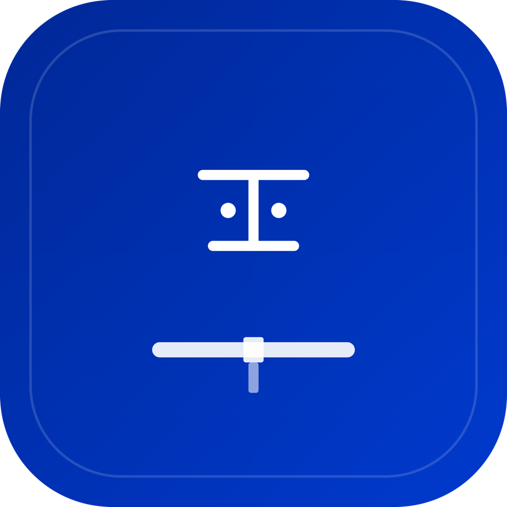

Each frame below = 1 App Store screenshot. Take a browser screenshot of each one individually at the correct resolution.
Recommended: use browser DevTools to set viewport to 1290x2796 (6.7") and screenshot each .screenshot element.
1/5
覚えた単語を、
忘れさせない。
忘却曲線に基づくSRSで、TOPIK語彙を科学的に定着
2/5
忘れかけた頃に、
復習が届く。
SM-2アルゴリズムが記憶状態を追跡

TOPIK道場
12語の定着率が約50%に低下。今なら短時間で回復
3/5
聴いて覚える。
読んで確かめる。
リスニング・リーディング両対応の4択テスト
4/5
毎日10語。
着実に積み上げる。
音声・例文付きカードで語彙を習得
5/5
サボったら、
道場が追いかけてくる。
放置するほど通知が厳しくなるエスカレーション機能
TOPIK道場
12語の復習が遅れ始めています
2時間前
TOPIK道場
12語の定着率が約50%に低下。今なら短時間で回復
昨日
TOPIK道場
12語の定着率が約25%に低下。今なら短時間で回復
2日前
TOPIK道場
12語の定着率が10%以下。覚え直しコストが急増中
3日前
TOPIK道場
12語が7日間未復習。再学習は初回の約70%の時間で済みます
1週間前